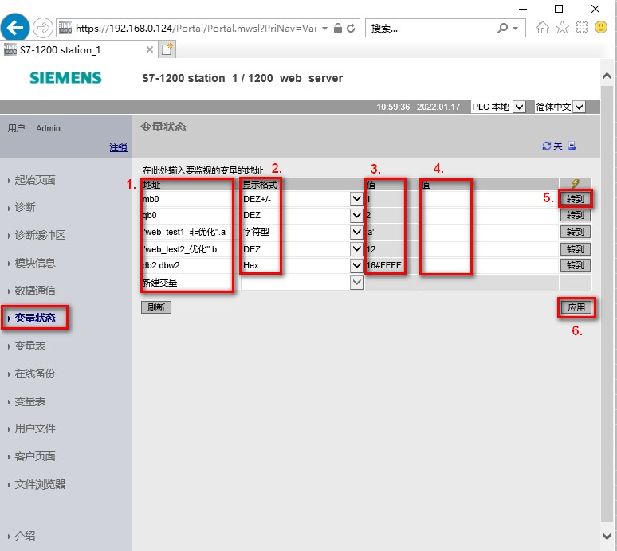

变量状态页面可以查看任何 CPU 中的 I/O 或者存储器数据。可以输入绝对地址（例如：MB0、I0.0、Q1.0等）、PLC 变量名或者数据块中的变量。可以选择显示的数据类型的格式；可以显示或者更改当前值。更改变量当前值可以单独更改或者统一更改，如图 1 所示。
 注意：查看变量状态页面，需要在组态用户权限时勾选“读取变量状态”权限；修改变量数值，需要勾选“写入变量状态”权限。
注意：查看变量状态页面，需要在组态用户权限时勾选“读取变量状态”权限；修改变量数值，需要勾选“写入变量状态”权限。

图 1. 变量状态
图中标注 1 地址栏
可以输入绝对地址或者符号名。对于数据块中的变量，有两种访问方式：绝对地址和符号访问。绝对地址访问仅用于非优化的 DB 块。
绝对地址访问：此文档第五行访问 DB2.DBW2。
符号访问：此文档第三行、第四行访问“web_test1_非优化”.a 或者“web_test2_优化”.b。
图中标注 2 显示格式
可以根据监视的变量的数据类型在此处切换选择相关的显示格式。
可以选择的格式有：bin（二进制）、字符型（字符串）、Unicode字符、hex（十六进制）、DEZ（无符号整型）、DEZ+/-（有符号整型），浮点型（Real/LReal）、时间（time） 等等。
图中标注 3 和 4 监视值和修改值
监视值：所监视变量的当前数值；修改值：对所监视变量修改当前值。
图中标注 5 和 6 转到和应用
转到：点击转到按钮，可以单独修改选中行的变量的当前值
应用：点击引用按钮，可以统一修改所有修改当前值的变量